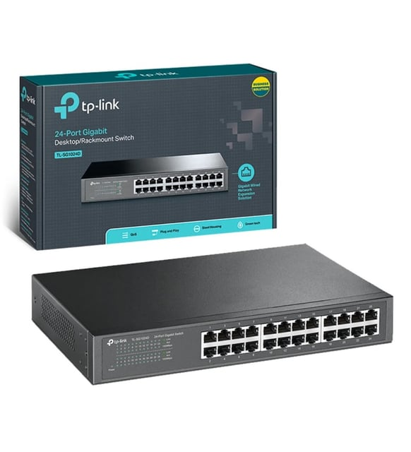

Taşınabilir Sistemler: Kurumsal laptops cihazlarında batarya ve işlemci performansını dengeleyen, arka planda çalışan yazılım optimizasyon kuralları dökümantasyonu.

Kurumsal veri merkezlerinin ve fabrikaların yerel ağ segmentlerinde yüksek çözünürlüklü IP kameraların ve yoğun veri aktarımlarının artması, merkez omurga cihazları üzerinde ciddi paket yüklemelerine yol açar. Gelişmiş gigabit switch ünitelerinde yaşanan bu tıkanmalar, lokal paket kayıpları (packet drops) meydana getirerek ticari yazılım paketlerinizin ve ERP sunucularınızın terminal bilgisayarlarında yavaş açılmasına sebep olur.
Bu yerel hat üzerindeki veri tıkanıklıklarını kesin olarak sonlandırmak için, kamera veya misafir veri trafiği ile kurumsal şirket ana bilgi ağ hattı mantıksal olarak birbirinden VLAN (Sanal Ağ) protokolüyle tamamen ayrılmalıdır. Ayrıca omurga router cihazları üzerinde QoS (Quality of Service) paket önceliği kuralları aktif edilerek, kritik ticari veri akışına öncelik tanınmalıdır. Yapısal kablolama şemalarında eski kalan CAT5 kablolar veri trafiğini taşıyamayacağı için, hatların tamamen CAT6 veya fiber optik donanımlarla yenilenmesi operasyonel bir zorunluluktur.
Ağ altyapısının fiziksel güvenliği sağlandıktan sonra, dış dünyadan gelecek tehditleri engellemek için sınır giriş noktalarına SSL derin paket denetimi yapabilen donanımsal firewall cihazları konumlandırılmalıdır. Kurulan güvenlik duvarı, ağdaki zafiyetleri kapatarak ransomware ve virüs sızıntılarını kapıda boğar. Olası felaket senaryolarına karşı verilerin her akşam buluta yedeklenmesi, donanım kilitlenmelerinde ise temiz oda teknolojisine sahip laboratuvar ortamında data kurtarma süreçlerinin yürütülmesi tam kapsamlı bir koruma planının parçasıdır.
Profesyonel ağ test cihazlarıyla yapılan kablolama analizleri, hatalı sonlandırmaları ve switch port arızalarını anında gün yüzüne çıkarır. Kurumsal sistem odası tasarımlarında, donanım upgrade süreçlerinde uyumlu ECC RAM bloklarının seçilmesi ve cihazların mikrokodlarının güncellenmesi ağ kararlılığını üst düzeye taşır. Uzak ofislerin veya personellerin ana merkeze güvenli erişimi için MFA kalkanlı VPN hatları kurgulanmalı, periyodik kurumsal teknik servis bakımları aksatılmamalıdır.
Kurumsal ağ topolojileri, gigabit switch yapılandırmaları, VLAN ayarları veya kablolama standartları ile ilgili teknik sorularınızı aşağıdaki canlı panel üzerinden iletebilirsiniz.
Taşınabilir Sistemler: Kurumsal laptops cihazlarında batarya ve işlemci performansını dengeleyen, arka planda çalışan yazılım optimizasyon kuralları dökümantasyonu.

Ağ Bileşenleri: Gigabit-switch ünitelerinde yüksek paket yoğunluğu yönetimi, kurumsal kablolama metotları ve omurga network altyapı sıkılaştırmaları.

Anakart Mimarileri: Endüstriyel bilgisayar ve ana kart hatlarında voltaj dalgalanmalarına karşı uygulanan donanım düzeyinde siber koruma teknikleri.
Uluslararası siber kriz anlarında veya laboratuvar ortamında acil veri kurtarma süreçlerinde saniyeler içinde teknik döküman havuzumuzdan servis lokasyonlarımıza ulaşabilirsiniz.